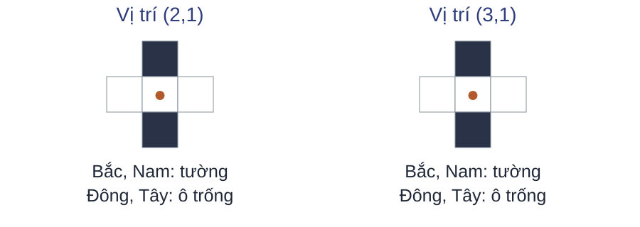

Bài toán ra quyết định tuần tự
Bài 02 · Giao diện tác tử–môi trường
Học tăng cường · Học kỳ 1, 2026–2027
Trường Đại học Công nghệ · Đại học Quốc gia Hà Nội
Mê cung và chuỗi quyết định

Nhiệm vụ: đi từ điểm bắt đầu tới đích.
Mỗi bước đi thay đổi vị trí và đường đi còn lại.
Mục tiêu học tập
- Mô tả tương tác tác tử–môi trường bằng các thành phần của giao diện.
- Phân biệt thông tin tác tử nhận được và quy tắc chọn hành động.
- Đánh giá và dự báo kết quả của một chuỗi quyết định.
Nội dung bài học
Bài toán ra quyết định tuần tự
Tương tác và phần thưởng
Trạng thái và thông tin quan sát
Chính sách lựa chọn hành động
Hàm giá trị và mô hình môi trường
Dự đoán, điều khiển và bài toán mê cung
Tổng kết và tự kiểm tra
Tác tử và môi trường

Tác tử: chọn hành động.
Môi trường: sinh phản hồi cho hành động.
Một bước trong mê cung
Tại $(0,2)$, chọn Đông.
Chuyển đến $(1,2)$.
Nhận thưởng $-1$.
Thứ tự tương tác

$t=0,1,2,\ldots$ đánh số bước tương tác.
$O_t\in\mathcal O$: quan sát; $A_t\in\mathcal A$: hành động.
$R_{t+1}\in\mathbb R$: phần thưởng sau $A_t$.
Tín hiệu học
| Khung | Tín hiệu | Thời điểm |
|---|---|---|
| Có giám sát | Nhãn đúng cho mỗi mẫu | Tại lúc học |
| Không giám sát | Không có nhãn | — |
| Tăng cường | Phần thưởng mỗi bước | Sau hành động |
Phần thưởng và mục tiêu
Thưởng $-1$ mỗi bước, kể cả bước vào đích; tới đích thì dừng.
| Đường đi | Tổng thưởng không chiết khấu |
|---|---|
| 16 bước | $-16$ |
| 18 bước | $-18$ |
Trong thiết lập này, ít bước hơn cho tổng thưởng lớn hơn.
Phản hồi trễ

Ví dụ trò chơi: chỉ gán thưởng khác 0 khi kết thúc với thắng hoặc thua.
Một hành động có thể ảnh hưởng kết quả xuất hiện nhiều bước sau.
Kiểm tra vòng tương tác
Tại $(1,2)$, tác tử chọn Bắc, đến $(1,1)$ và nhận $-1$.
Câu hỏi: Khi quan sát là tọa độ, điền $A_t$, $R_{t+1}$ và $O_{t+1}$.
Giải thích liệu thưởng $-1$ có xác định hành động tối ưu.
Thông tin để ra quyết định
Cảm biến chỉ báo bốn ô kề có tường hay đi được.

Quan sát hiện tại chưa phân biệt được hai vị trí.
Trạng thái và quan sát
Trạng thái
$S_t\in\mathcal S$
Tình huống của môi trường trong mô hình.
Quan sát
$O_t\in\mathcal O$
Thông tin tác tử nhận được.
Biểu diễn
$X_t\in\mathcal X$
Dữ liệu dùng để chọn hành động.
Trong mê cung cố định, trạng thái là tọa độ; quan sát có thể chỉ là bốn ô kề.
Thông tin trong lịch sử
Hai xe cùng vị trí, cùng lệnh phanh, nhưng khác vận tốc.

Vị trí đơn lẻ bỏ mất thông tin ảnh hưởng chuyển động.
Tính Markov
Biết trạng thái và hành động thì lịch sử không cải thiện dự báo bước tới.
$H_t^S$: lịch sử trạng thái–hành động–thưởng; $h$ kết thúc ở $s$.
Xét biến rời rạc và các biến cố điều kiện có xác suất dương.
Trạng thái trong mê cung
- Bản đồ cố định, chuyển động xác định, thưởng $-1$ mỗi bước, đích $G$.
- $S_t = (x_t, y_t)$: cùng $(s, a)$ cho cùng phản hồi, độc lập đường đã đi.
Câu hỏi: nếu cửa ra phụ thuộc chìa khóa, tọa độ $(x_t, y_t)$ còn đủ không?
Quan sát đầy đủ và một phần
| Mức quan sát | Thông tin về trạng thái |
|---|---|
| Đầy đủ | Từ $O_t$ xác định được $S_t$. |
| Một phần | Một $O_t$ có thể phù hợp với nhiều $S_t$. |
Ảnh bốn ô kề tại $(2,1)$ và $(3,1)$ giống nhau, nên không xác định được vị trí.
Biểu diễn dùng để quyết định
Lịch sử $H_t = (O_0, A_0, R_1, \ldots, O_t)$ giúp phân biệt thông tin bị mất khỏi $O_t$.
$$X_t = f(H_t)$$
Xe: hai vị trí $x_t, x_{t-1}$ suy ra vận tốc trong mô hình chuyển động đều.
Nhiều khung quan sát gần nhất chưa chắc cho trạng thái Markov.
Kiểm tra thông tin quan sát
Câu hỏi: Phân loại mức quan sát và nêu giả thiết.
- Tọa độ chính xác trong mê cung cố định.
- Ảnh toàn bản đồ, thấy rõ tác tử và mọi ô.
- Cảm biến chỉ báo bốn ô kề.
Quy tắc lựa chọn hành động

Biết vị trí chưa xác định được hành động cần chọn.
Chính sách quy định cách chọn hành động từ thông tin hiện có.
Ví dụ về chính sách
Tại $x=(1,2)$, xét hai quy tắc chọn hành động.
| Quy tắc | Bắc | Đông | Nam | Tây |
|---|---|---|---|---|
| Luôn Bắc | 1 | 0 | 0 | 0 |
| Bắc hoặc Đông | 0,5 | 0,5 | 0 | 0 |
Các số là xác suất chọn. Tại ô này, chọn Đông gặp tường và giữ nguyên vị trí.
Chính sách xác định
Với mỗi biểu diễn đầu vào, chính sách xác định chọn một hành động.
| $x$ | $\pi(x)$ |
|---|---|
| $(0,2)$ | Đông |
| $(1,2)$ | Bắc |
| $(1,1)$ | Đông |
Chính sách ngẫu nhiên
Với $x\in\mathcal X$, chính sách cho một phân phối trên $\mathcal A$.
$\pi(a\mid x)\ge0$, và $\sum_{a\in\mathcal A}\pi(a\mid x)=1$.
Trong mê cung: $\mathcal A=\{\text{Bắc},\text{Đông},\text{Nam},\text{Tây}\}$.
Nếu dùng trạng thái đầy đủ làm đầu vào, chọn $X_t=S_t$.
Kiểm tra chính sách
Câu hỏi: Cho $\pi(\text{Bắc}\mid x)=0{,}2$, $\pi(\text{Đông}\mid x)=0{,}5$ và $\pi(\text{Tây}\mid x)=0$.
Tính $\pi(\text{Nam}\mid x)$ và phân loại chính sách.
So sánh chất lượng các chính sách cần xét phần thưởng tương lai.
Kết quả dài hạn của chính sách
Hai chính sách có thể nhận cùng thưởng tức thời nhưng tạo ra các đường đi dài khác nhau.
Chính sách
Chọn hành động.
Hàm giá trị
Đánh giá kết quả dài hạn.
Mô hình
Dự báo phản hồi.
Tổng phần thưởng trên quỹ đạo
Đoạn cuối: $(6,5)\to(6,6)\to(7,6)\to G$; mỗi bước nhận $-1$.
| Cách tính | Trọng số ba phần thưởng | Tổng |
|---|---|---|
| Cộng trực tiếp | $1;1;1$ | $-3$ |
| Mỗi bước giảm một nửa | $1;0{,}5;0{,}25$ | $-1{,}75$ |
Chiết khấu giảm trọng số của phần thưởng nhận muộn hơn.
Phần thưởng tích lũy
$T$: thời điểm kết thúc; $t<T$. Hệ số chiết khấu $\gamma\in[0,1]$.
$G_T=0$: không còn thưởng sau khi kết thúc.
Ba bước vừa xét tương ứng $k=0,1,2$.
Giá trị kỳ vọng
Ví dụ giả định: từ $s$, dưới một chính sách cố định, môi trường chọn một trong hai nhánh kết thúc.
| Số bước còn lại | Xác suất | Tổng thưởng |
|---|---|---|
| 3 | $0{,}5$ | $-3$ |
| 5 | $0{,}5$ | $-5$ |
Thưởng $-1$ mỗi bước, $\gamma=1$: kỳ vọng bằng $0{,}5(-3)+0{,}5(-5)=-4$.
Hàm giá trị trạng thái
Giữ cố định chính sách Markov $\pi(a\mid s)$ và động lực môi trường.
Lấy trung bình trên hành động của chính sách và chuyển động của môi trường.
Giả thiết: quy luật không đổi theo thời gian và kỳ vọng hữu hạn.
Kiểm tra giá trị
Câu hỏi: Quỹ đạo ba bước có thưởng $-1$ mỗi bước.
Tính $G_t$ với $\gamma=0$, $\gamma=0{,}5$ và $\gamma=1$.
Phân biệt $G_t$ của quỹ đạo này với $v_\pi(s)$.
Dự báo bước tiếp theo
Mô hình dự báo trạng thái kế tiếp và phần thưởng từ một cặp $(s,a)$.
| Trạng thái và hành động | Trạng thái kế tiếp | Thưởng |
|---|---|---|
| $(0,2)$, Đông | $(1,2)$ | $-1$ |
| $(0,2)$, Bắc | $(0,2)$: gặp tường | $-1$ |
Dự báo phản hồi khác với lựa chọn hành động.
Mô hình chuyển và phần thưởng
Với $s,s'\in\mathcal S$ và hành động $a\in\mathcal A$ trước khi kết thúc:
$P$ dự báo trạng thái; $\bar r$ dự báo phần thưởng trung bình.
Kiểm tra mô hình
Câu hỏi: Mô hình dự báo từ $(0,2)$ chọn Đông sẽ đến $(1,2)$ và nhận $0$.
Đối chiếu với luật thưởng $-1$ mỗi bước: thành phần nào sai?
Dự báo đúng một bước đã xác định được cả đường tới đích chưa?
Đánh giá và cải thiện chính sách
Mô tả được chính sách chưa cho biết chất lượng của nó.
| Nhiệm vụ | Đại lượng giữ cố định | Kết quả cần tìm |
|---|---|---|
| Đánh giá | Chính sách $\pi$ | Giá trị $v_\pi$ |
| Tìm cách hành động | Môi trường và mục tiêu | Chính sách phù hợp mục tiêu |
Dự đoán và điều khiển
Dự đoán
Giữ chính sách ở hình mê cung; tính $v_\pi(0,2)$ khi $\gamma=1$.
Điều khiển
Tìm chính sách tối đa hóa phần thưởng tích lũy kỳ vọng từ điểm bắt đầu.
Câu hỏi: Phân biệt đầu ra của hai yêu cầu.
Đặc tả môi trường mê cung
| Thành phần | Đặc tả |
|---|---|
| Trạng thái | 27 ô đi được và đích $G=(8,6)$. |
| Hành động | Bắc, Đông, Nam, Tây. |
| Chuyển | Đi sang ô kề; gặp tường hoặc biên thì đứng yên. |
| Thưởng và kết thúc | $-1$ mỗi bước, kể cả vào $G$; đến $G$ thì dừng. |
Riêng từ $(7,6)$, chọn Đông sẽ vào đích ngoài lưới.
Chính sách trên mê cung
Mỗi ô đi được có một hành động được chọn.
Từ $(0,2)$ đến $G$: 16 bước.
Ở $G$, tương tác kết thúc.
Giá trị trên mê cung

Chuyển xác định, $\gamma=1$, mỗi bước thưởng $-1$.
Giá trị bằng âm số bước còn lại theo chính sách.
Câu hỏi: Giải thích $v_\pi(7,6)=-1$ và $v_\pi(G)=0$.
Trạng thái kết thúc trong trò chơi

X vừa hoàn thành đường chéo và nhận thưởng $R_T=1$.
Câu hỏi: Ván đã kết thúc. Tính $G_T$ và giải thích sự khác nhau với $R_T$.
Kiểm tra mô hình hóa
Câu hỏi: Giữ nguyên mê cung và quy tắc thưởng. Thay quan sát tọa độ bằng cảm biến bốn ô kề.
Xác định thành phần giữ nguyên và thành phần cần thay đổi trong mô tả tác tử–môi trường.